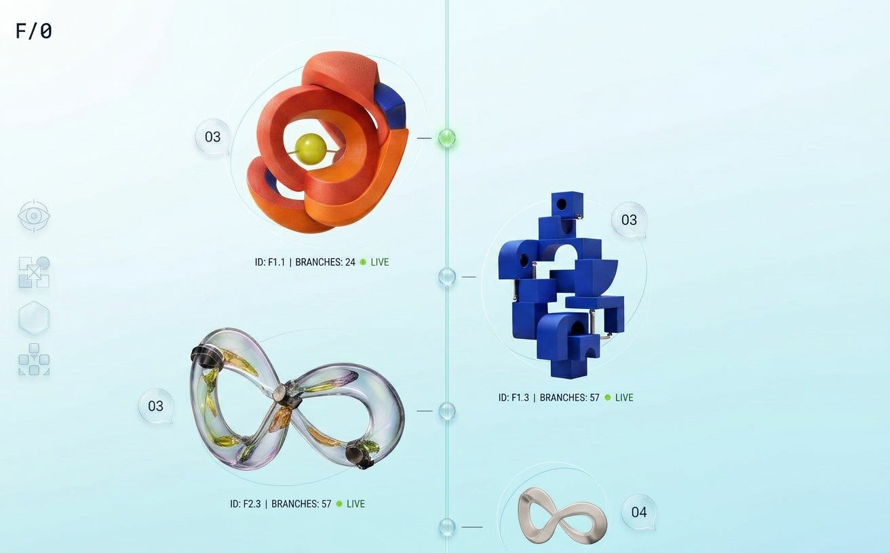
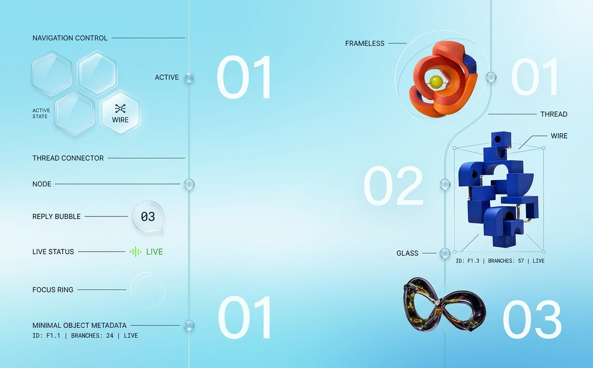
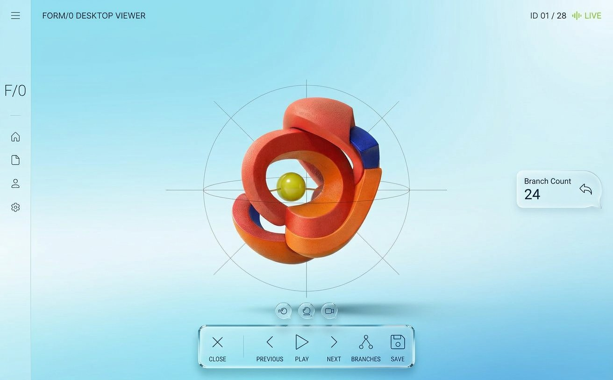
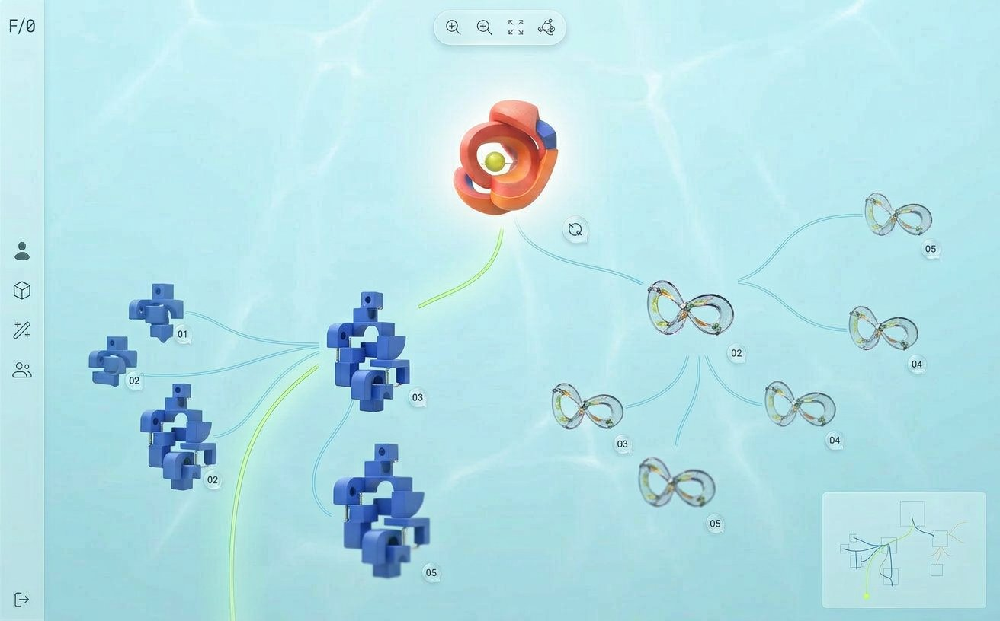
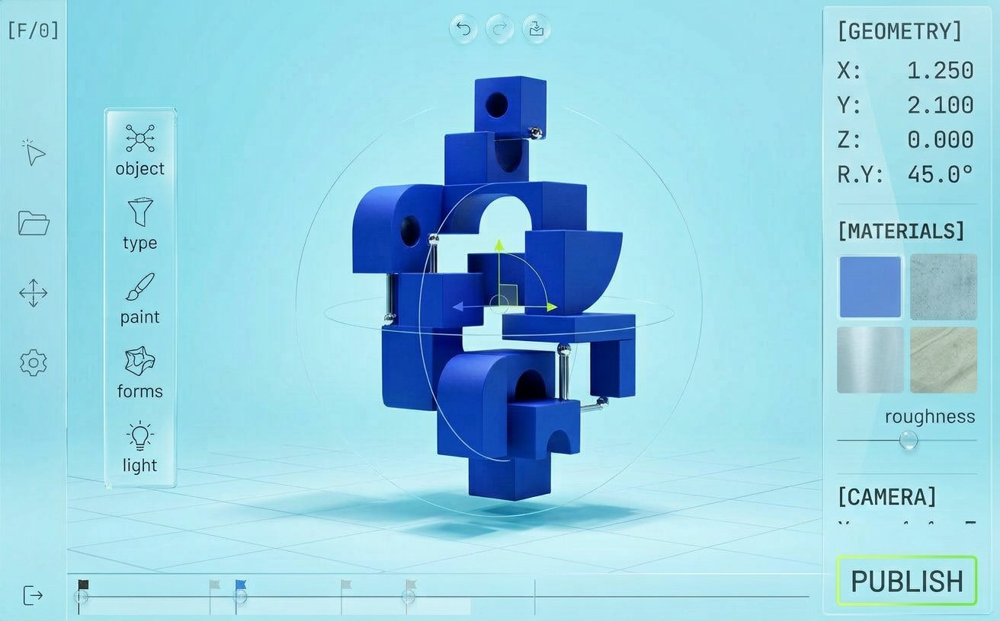
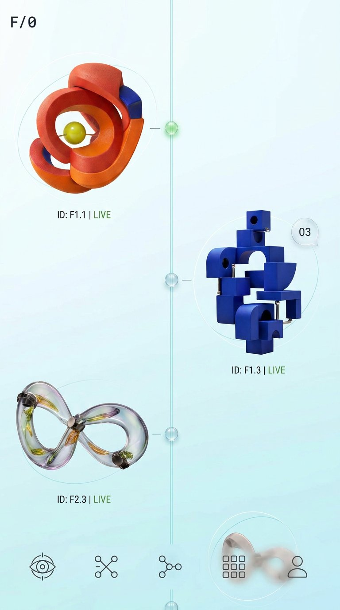
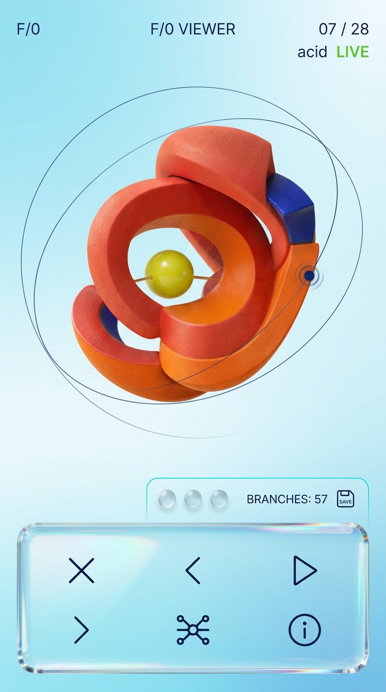
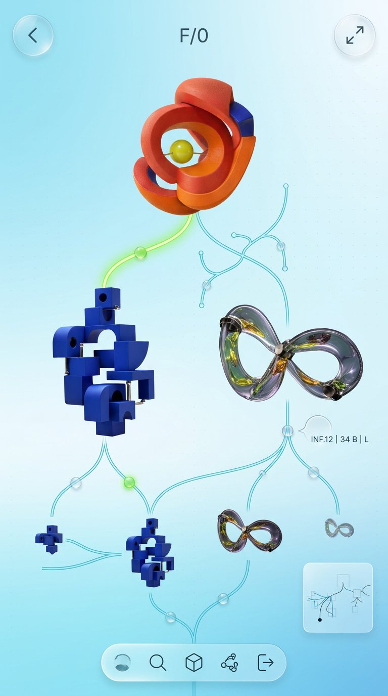
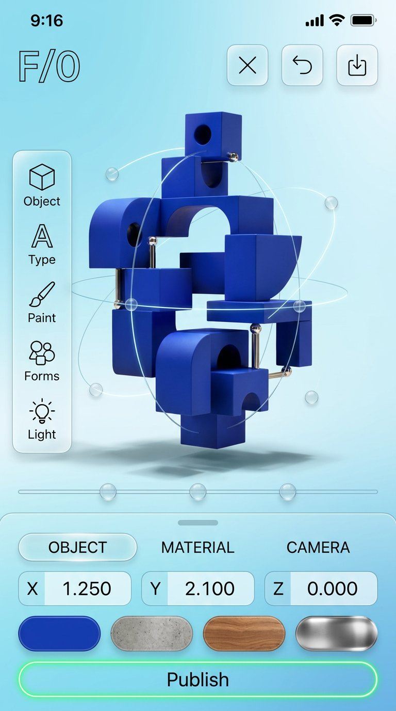

FORM/0 × Aero Wire / responsive
OBJECTS FIRST.
OBJECTS FIRST.
EVERY VIEW.
The frameless Aero Wire system now extends across the viewer, branch map, and studio. Each page has a purpose-built portrait composition—not a desktop layout squeezed onto a phone.

desktop system / frameless model views



mobile portrait / purpose-built compositions




previous exploration / round 02